Formed in London in 1967, Fleetwood Mac, named after two of its founders, is a soft rock band that rose to
popularity
in the mid 1970s. They started out as a British blues group lead by Peter Green but later evolved into what
they
are
known for today.
They released over 15 albums throughout the years and had numerous lineup changes,
the
most
famous one being the five who created the album Rumours. In 1998, Fleetwood Mac was inducted into the Rock
and
Roll Hall
of Fame, marking them as one of the most iconic bands of all time.
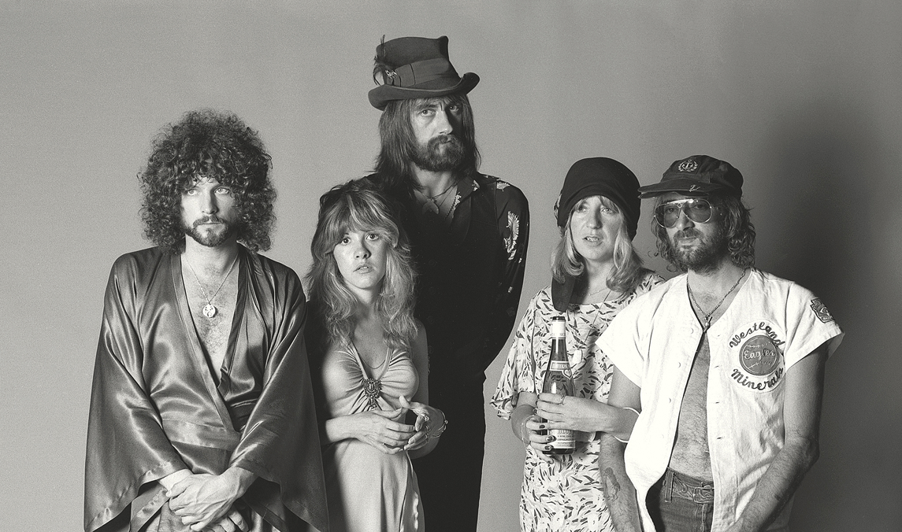
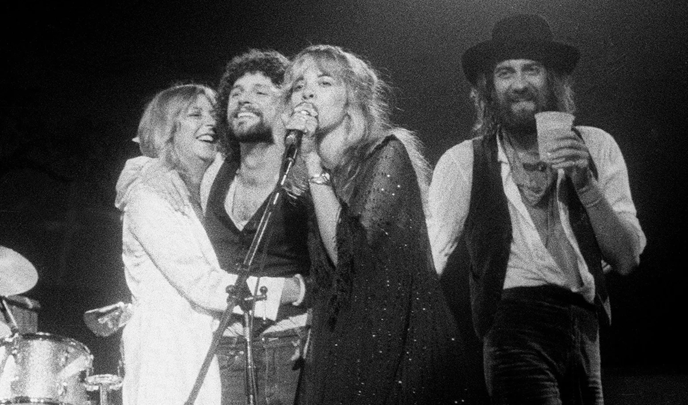
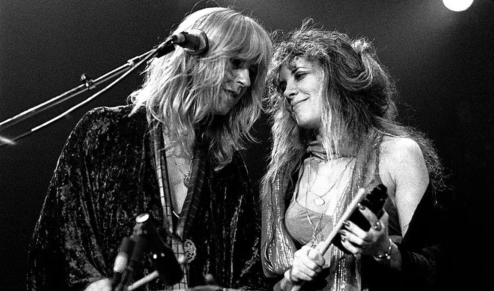
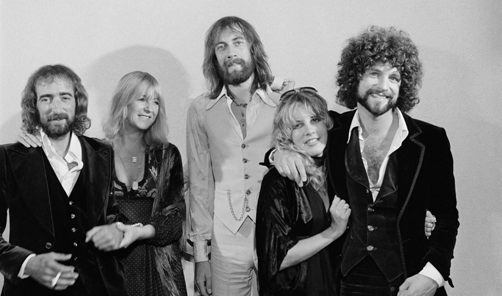
THE BAND
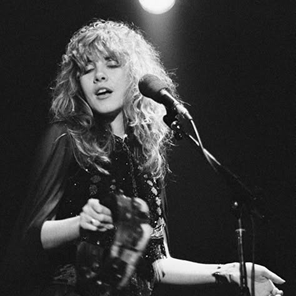
Stevie Nicks
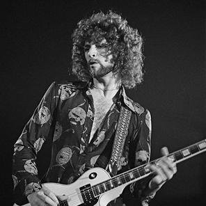
Lindsey Buckingham
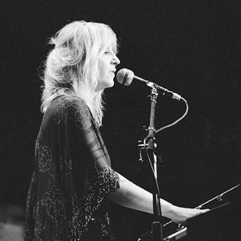
Christine McVie
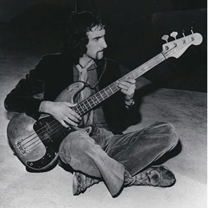
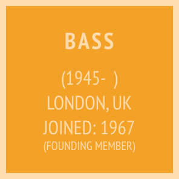
John McVie
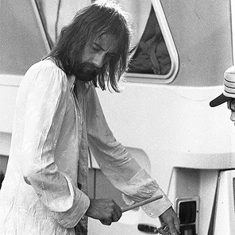
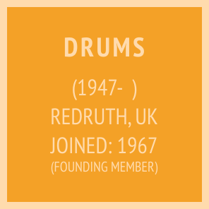
Mick Fleetwood
THE ALBUM
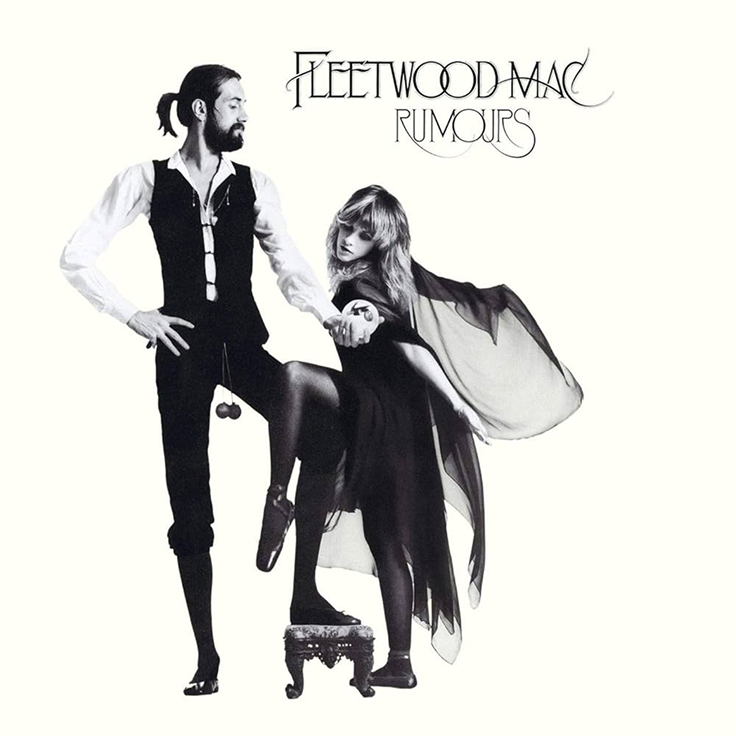
Rumours is Fleetwood Mac’s 11th studio album (second with this lineup), and was released on
February
4th, 1977.
Most of its songs are inspired by the band’s emotional turmoil since Lindsey Buckingham
and Stevie Nicks were going through a breakup and Christine and John McVie were going
through a
divorce. During the recording process, the band members often engaged in heated screaming
matches, infusing their songs with raw emotion and authenticity. This tension contributed to
the themes of love, heartache and betrayal in the album.
Rumours won a grammy for album of the year in 1978 and is one of the best selling
albums of all time, selling over 40 million copies worldwide.
(Buckingham)
The percussion in this song was made by hitting a chair in the recording
studio.
(Nicks)
The song was written in 10 minutes and is the only Fleetwood Mac song to
have
hit
no.1 on the Billboard
Hot 100 in the USA.
(Buckingham)
While recording, the strings of the guitar played by Lindsey Buckingham
were
changed
every
20 minutes, sugested by
the bands producer, to keep the bright sound of new strings.
(C. McVie)
This is the most optimistic song in the album. It was used for Bill
Clinton's
campain in 1992 and the
band reunited to perform it at his inaugural ball in 1993.
(Buckingham)
The song was recorded in 3 different studios over a 4 month period. It's
about
Lindsey Buckingham's perspective on his
breakup with Stevie Nicks.
(C. McVie)
Written at midnight in about 30 minutes, the song was recorded in one
take in
an auditorium with 15 microphones
to capture Christine McVie's performance.
(Nicks, Buckingham, C. McVie, J. McVie, Fleetwood)
The song took a year to make and was created from pieces of different
songs
put together. It is the only
song on the album to give writting credits to all the members.
(C. McVie)
Christine McVie told her then husband, bassist John McVie, the song was
about
her
dog when she wrote it. In actuallity, it was
about her affair with the band's lighting director.
(Nicks)
Originally Stevie Nicks wrote the song years before for her and Lindsey
Buckingham's duo album.
The song ended up replacing
Silver Springs on the final cut because they needed a shorter track.
(C. McVie)
Christine McVie has said she wrote the song about Mick Fleetwood who was
the
only father
in the band at the time. Despite that,
people have speculated it is also a song written about her relationship with the
band's
lighting director.
(Nicks)
Stevie Nicks has said this song is about having a hard time dealing with
a
bad
relationship, drugs and trying to
get trough it.
(Nicks)
Not originally on the album but added in later versions, this song is
about
Stevie Nicks's perspective on her
breakup with Lindsey Buckingham. In later years, it has become a fan favourite
because
of
the emotional live
performances of the song, specifically the one from 1997.